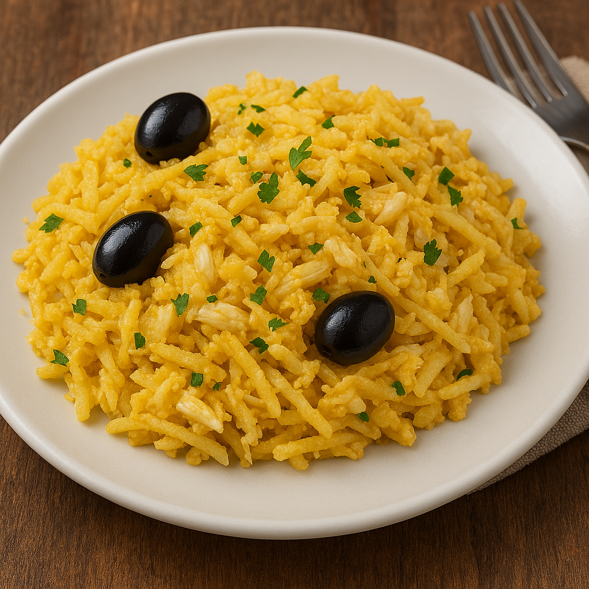

Receita de Bacalhau à Brás

Um pouco de história...
Bacalhau à Brás (ou também Bacalhau à Braz) é um típico prato
português de bacalhau.
Sendo um dos pratos mais populares confecionados com este
peixe, consiste em bacalhau desfiado, batata palha frita, cebola
frita às rodelas finas, ovo mexido, azeitonas e salsa picada.
É muito consumido em Portugal e também em Macau.
O excelen-
te sabor depende da relação dos componentes da receita, princi-
palmente a quantidade de cebola em relação ao bacalhau e o
azeite usado para efetuar este prato.
A receita foi criada por um taberneiro do Bairro Alto, em Lisboa,
de nome Brás (ou Braz, como era uso escrever nessa época).
fonte: Wikipédia
Receita
|
Características da receita
|
|
Dificuldade
|
custo
|
Tempo
|
Doses
|
| Fácil |
Baixo |
40 minutos |
4 Pessoas |
Ingredientes:
- 400g de batata palha
- 6 Ovos
- 500g de bacalhau desfiado
- 2 cebolas
- 3 dentes de alho
- Salsa à gosto
- 1dl de água
- 0,5dl de azeite
- Sal e pimenta à gosto
- Azeitonas à gosto
Modo de Preparação:
- Demolhe o bacalhau de um dia para o outro.
- Descasque e lave as cebolas e corte-as as cebolas em meias luas finas.
- Descasque e lave os dentes de alho. pique-os finamente.
- Bata os ovos com o leite.
- Num tacho aqueça o azeite. junte as cebolas e os dentes de alho.
- Deixe refogar até que fique douradinho.
- Junte depois o bacalhau e deixe cozinhar mais um pouco até que fique com o aspeto de cozinhado.
- Junte depois as batatas, envolva e regue com os ovos.
- Deixe cozinhar, mexendo sempre.
- Retire do lume e retifique os temperos.
- Polvilhe com salsa picada e as azeitonas.
- Decore a gosto e sirva.
Gostou desta receita? Deixe seu e-mail para receber nossa newsletter.